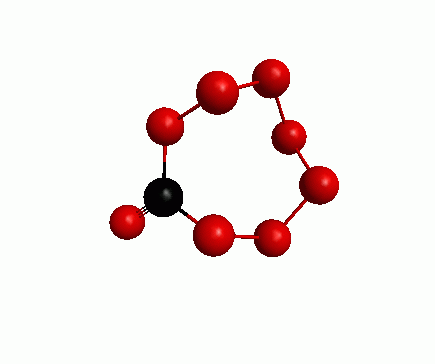
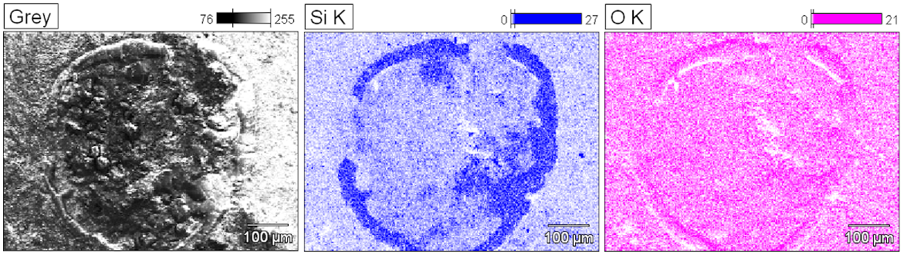
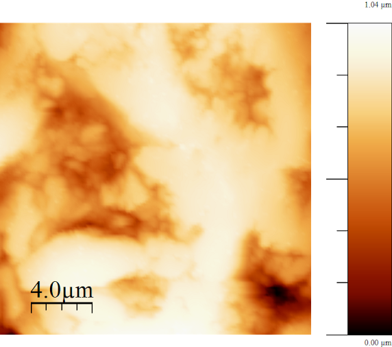
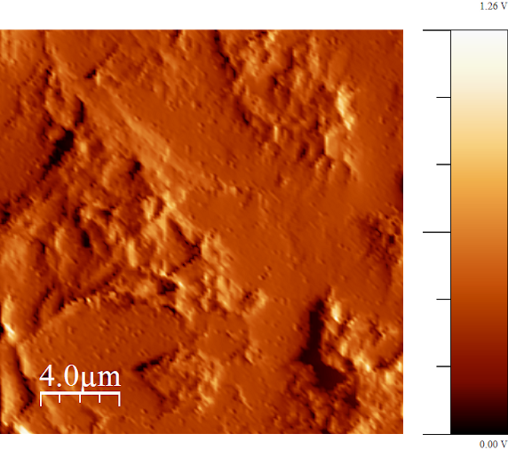
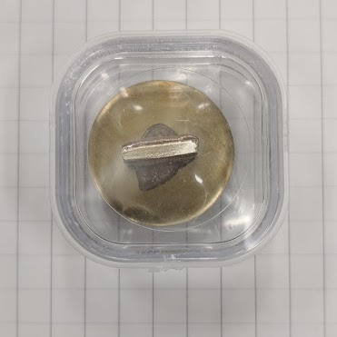
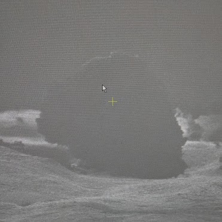
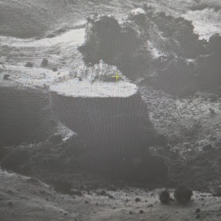
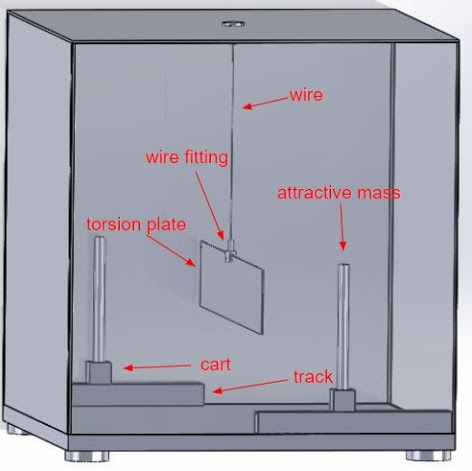

Geometry Optimization of CO₈
Oftentimes in my lab we study molecules that have never been characterized
or quantified before, making theoretical predictions of molecular properties
necessary for comparison to our experimental results. For this we implement
Density Functional Theory (DFT) calculations, as well as Quantum Mechanical
ab initio calculations.
To the left is an example of a DFT calculation I performed on the CO₈
molecule in pursuit of an optimized geometrical structure. Unfortunately,
due to its unstable nature the lowest energy state is a when it breaks apart
and form multiple stable molecules (a general equation for this is shown
below the GIF). For this calculation I used the GAMESS(US) software by the
Gordon research group and the animation was done through wxMacMolPlt
software by Brett Bode.

\[CO_8 \to CO_2 + 3O_2\]
SEM/EDS Analysis of Allende Meteorite
Scanning Electron Microscopes (SEM) with Energy-Dispersive X-ray Spectroscopy
(EDS or EDX) capabilities are quite powerful instruments for both imaging
and elemental analysis. SEM produce images of samples by scanning the
surface with a beam of electrons, when the electrons impact the surface they
produce Secondary Electrons (SE) and Back-Scattering Electrons (BSE) which
are detected and used to form an image of the surface. EDS is typically done
with a higher energy beam of electrons, which then excite core shell
electrons in the samples atoms that emit characteristic X-rays. These X-rays
are detected and used to produce an elemental analysis of the sample surface.
Here, is an example of an Allende sample that I imaged with an SEM and
performed elemental analysis of a particular region using EDS. We can see a
silicate mineral ring in the sample, thought to have formed on the Allende
meteorite by impact from another smaller asteroid which had a layered
composition. Then through (natural or artificial) weathering of the surface
only a ring of the silicate mineral layer remains.

AFM of 20 µm2 Area of Allende Meteorite
Atomic Force Microscopy (AFM) is a technique in which a fine tipped probe
attached to cantilever is set to interact with a surface, you the raster
the probe across the surface measuring the displacement of the cantilever.
The displacement of the cantilever is measured by using a laser that is
reflected of the top of the cantilever and recorded by a photodiode. This
technique allows for force measurements, imaging and manipulation of the
sample surface.
Here, is an example where I used AFM on a polished piece of Allende
meteorite in order to determine the flatness of the surface.


Allende Meteorite Dust Grain FIBing Process
Focused Ion Beam (FIB) is a technique in which a finely focused beam of ions
(typically Gallium) is used to image or etch a sample. The theory behind FIB
is quite simple, when the Gallium ions impact the sample a small amount of
material is sputtered off in the form of secondary ions and secondary
electrons. These secondary ions/electrons can be collected to form an image.
When the beam current used is high enough the sample is sputtered away in
larger quantities, allowing for specific site milling.
Here, is a an example where I used a FIB to mill away the top layer of an
Allende meteorite dust grain, giving us a nano-scale flat surface to later
analyze. Note that before FIBing the sample was coated in gold, this is to
increase its conductivity since the ion beam can produce a surface charge
and distort the image generated.



SPS Chapter Research

During my undergraduate physics degree, I was awarded a grant to conduct a
recreating of the original Cavendish experiment using novel techniques and
modern technology.
Click
here to read more about it.